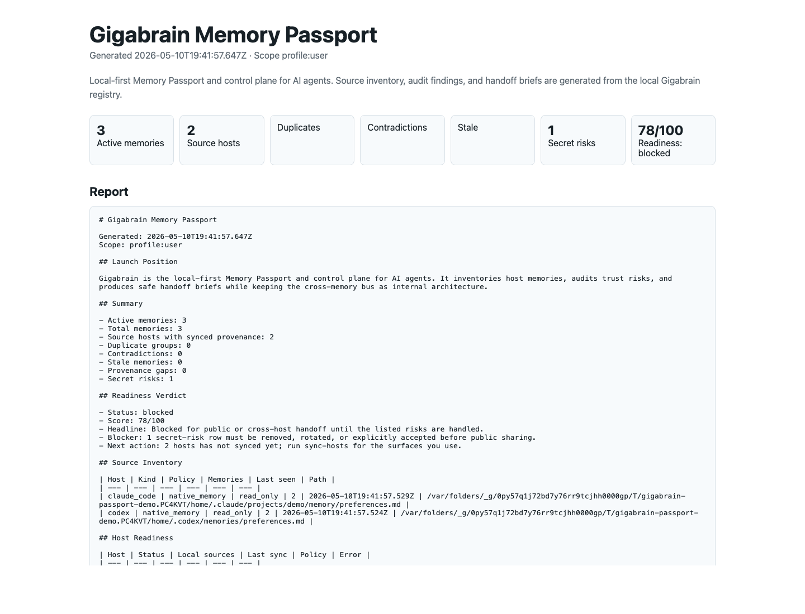

It scans local memory surfaces
Gigabrain reads visible local sources such as Codex memories, Claude Code project memory, Cursor/Windsurf rules, OpenClaw memory, and explicit manual exports from cloud assistants.
Memory governance for multi-agent setups
Run more than one agent and each one quietly remembers different, sometimes contradictory things. Gigabrain scans the memory and instruction files your local agents already use, shows where each memory came from, flags contradictions, stale facts, and secret-leaking rows, and writes safe handoff briefs for the next agent.
The Memory Passport is the report Gigabrain generates before you move agent context between tools, teams, or repos. It answers three governance questions: what do the agents remember, can you trust it, and what is safe to hand off? (It is a report and handoff pack — not a portable, re-importable bundle; that is roadmap.)
Gigabrain reads visible local sources such as Codex memories, Claude Code project memory, Cursor/Windsurf rules, OpenClaw memory, and explicit manual exports from cloud assistants.
The report flags duplicate memories, stale facts, contradictions, missing provenance, and secret-like rows before those memories are reused by another agent.
ChatGPT, Claude.ai, Gemini, and Copilot flows are manual import/export only. Secret-risk rows are never placed into generated handoff briefs.
The Passport report is static and local. You can open it in a browser, attach it to a review, or use the generated briefs to carry only approved context into the next agent.

See Codex, Claude Code, Cursor/Windsurf, OpenClaw, and manual cloud-export memory inputs in one local report.
Find duplicates, contradictions, stale facts, provenance gaps, and secret-risk rows before context moves again.
Generate AGENTS.md, CLAUDE.md, ChatGPT, Claude.ai, Gemini, and Copilot briefs with secret-risk rows omitted entirely.
The core is a CLI and MCP-backed control plane. Start with a static Passport, then graduate to policy checks, CI, and team review workflows.
npm install @legendaryvibecoder/gigabrain npx gigabrainctl sync-hosts \ --config ~/.gigabrain/config.json \ --host codex,claude_code,cursor,windsurf npx gigabrainctl passport \ --config ~/.gigabrain/config.json \ --output-dir ./gigabrain-passport
The pilot turns invisible agent memory drift into an audit artifact your engineering and security teams can actually discuss.
CLI, MCP tools, host sync, static report, safe handoff briefs, and local audit checks.
First audit, policy preset, remediation plan, and CI-ready Passport gate for one active repo.
Signed Passport attestations, admin review queues, policy packs, SSO, and fleet sync status.